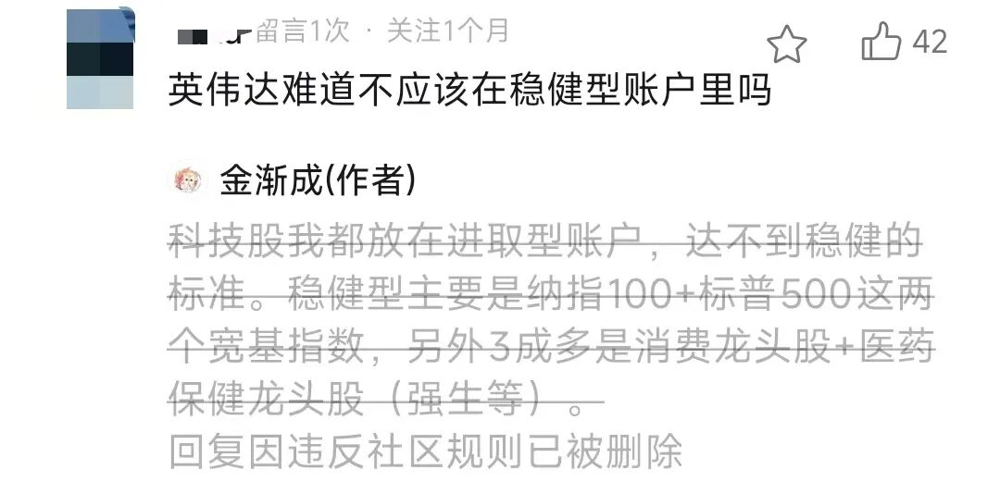

天玑 · 金渐成 ·
美股的三大账户没什么操作，国际账户操作清了一个板块。
印度孟买板块清仓了，历时一年半，收益率只有3.97%，耗费精力和时间;台湾的三个个股也清仓，收益11.14%…
认真总结了一番，还是清仓，聚焦在美股上，外翼收缩为日经225+富时100，够了。
当初进入印度板块，主要是想产业链供应链转移后，印度有机会发展起来，人口红利+市场大，但AI对印度这种劳动密集型产业和IT外包等业务是大的利空，这显然被我忽略和低估了。
买入后，大部分时间内都是处于账面浮亏的状态，趁着最近修复一部分涨幅，账面有浮盈，就果断清仓。
错了就及时改，尽早离去，这代价最小，越拖越麻烦，耗费精力和时间，得不偿失。我每年都会筛选一遍持仓，淘汰一些，吸纳一些新的进来。
我经常说，对于不懂市场的人来说，不买股票也挺好的，知道自己的局限和边界，尽早离去，及时止损也是一种赚。
过去5年，印度NIFTY50涨幅为98.3%，这还是最近一年半下跌较大的情况下，但我进入的时间也不对，所以收益整体很低。
作为对比，富时100过去5年涨幅84.6%，我的收益是比这略高几个点;日经225过去5年涨幅102%，我主要买的是个股，收益比这个高。
标普500过去5年涨幅96.1%，纳指100过去5年涨幅是103.8%，但如果能把握22年和25年3-4月的大跌，整体的收益率会更高。我这种主要集中在美股七巨头+台积电+消费龙头股+医药保健龙头股的，收益率会更高。
后续就不再写自己的任何持仓、配置比例等，没法写，930新规落地后，这些都过去的表达习惯都要改。现在平台可能已经开始执行了，最近我几次这类的回复都被盾了:

所以，多理解，规则一直在变，不要刻舟求剑要求我还像过去一样表达。五年前能写的内容，和现在能写的内容，是完全不同的两种类型，因为面对的尺度完全不一样。
不理解也没办法。有些人被投喂习惯了，总想着白嫖不说，得不到就骂骂咧咧，还已成巨婴，自己都不愿意分析一二。
上一篇和不久前说过，现在美股主要看企业自身，即企业的基本面等，重点在盈利情况和是否可持续。就这么明显的表达，还有二愣子自己不去看，张口就问，不知道长眼睛和脑子干嘛的。
楼市的事也表达过很多次自身的观点，至今仍有很多人在问房子能不能买，要不要卖？
楼市就看深圳和杭州，这俩城市就是一二线城市的风向标。我个人从数据和趋势上看，认为自己如果非要买房的话，2035年以后再说也不迟。
也不要轻易去创业，除非非常有把握，确定性很强再去做，做之前先给家庭做好风险隔离和兜底资产，现在已经不是以前的黄金创业期。
五六年前我就不再建议创业，大号的历史文章都能翻到。回顾过去几年，有些人现在吃的所有苦都是努力得来的，你还不敢笑的太大声，怕老天以为你不服。
不要去和大趋势对抗，也要学会放过自己。
当你发现自己顺手就能做好的事，在别人那却如登天一样费劲的时候，就要明白:有些人的不堪也并不全是他们不够努力。
天赋、背景、资源、风口、运气等等，缺一不可。学会放过自己，学会喘气。我也会回顾自己的过往，然后发现不可复制，自己再来一遍，也不一定能有现在的成就，因为环境和时代变了。
说到底，人生最有价值的东西，是选择权。
正如以前所说的:让自己始终处于有选择的境地，就是自由。
金钱只是保持自由的一种工具，我们追求富有、地位、知识和健康，也不过是为了不被金钱、权势、愚昧和疾病所束缚。
… …
今天跟我大儿子聊资产配置时，我说到自己目前的资金分配方式。
整体上就是三币分仓，即国内持有人民币，香港持有港币，美国持有美元。相互之间很少流通，尽可能再各自的体系内循环和横向流动。
减少纵向穿透的主要原因是，资金体量达到一定程度，频繁跨体系兑换、跨境汇款，会留下更多银行流水、交易所KYC、资金来源和资金去向记录，也更容易遇到AML审查或要求解释资金来源。特别是老美这种地方，反洗钱等非常严格。
因此，国内每年的额度我都一次性用完，不会分拆成几次，蚊子腿也是肉。
对老大的教导，开始进入很细致的阶段，结合实操给他讲清楚具体的风险隔离和管控措施。
跟老三打网球，他现在进步挺大的，就是横向移动的脚步不够轻盈，这方面要加强训练。
我在辅导他中文学习时，跟他说起“语言腐败”一词，是这么解释的:
正常表达是老美用5枚导弹摧毁了5艘伊朗油轮。语言腐败是:伊朗用5艘油轮就轻易拦截了老美5枚导弹。
他现在英语水平不错，在这上学和日常交流完全没障碍，老师和同学们也很喜欢他。
至于老二，目前她适应得还不错，她们班上有两个香港和日本的学生，整体相处得不错，小孩子的交往一般不会涉及政治，挺好的。
政治这东西，是人群撕裂和团结最好的催化剂。有点不同意见，往往会吵得不可开交，我是很不喜欢涉及这类话题。
跟三个孩子开了个家庭小会议，我们总结了一番到加州这遇到的问题和有效解法，彼此都觉得很不错。
过程中，我跟他们解释了“穷”和“富”的区别，这个他们印象比较深。
穷呢，是一个家八个人全部往不同方向出力，不团结，相互内耗;或人被困在狭小的空间里，只懂得一味出卖蛮力，不懂思考变通，即使再辛苦也难改清贫。富，是在稳定的环境中（家），通过专注（一寓专注）和正确的思维、良好的沟通（口），拥有能持续产出的资产（田），就能富足。
好好说话，是一个家庭最好的风水。重点表扬了老三，还给他颁发了一张奖状和奖金，最近一年脾气控制得非常好。
现在他已经知道发脾气不是本事，控制住脾气才是最大的本事，无论在家里还是在外面，都要好好说话，不随意发脾气。
我们经常通过鼓励和引导孩子，让他尝到甜头（物质或精神层面的成就感），自愿去实践。
放下控制欲，给孩子信任、尊重、鼓励和自由发挥的空间，效果其实挺好的，起码我自己实践这十几年下来，切身感受是这样。
以前不太能理解有些控制欲太强的父母，树木没有生长空间，最后很容易导致畸形，更何况是人呢？
后来想明白了，他们只是想在孩子身上，体验在别处得不到的权力感。
就这样吧。